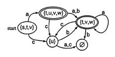
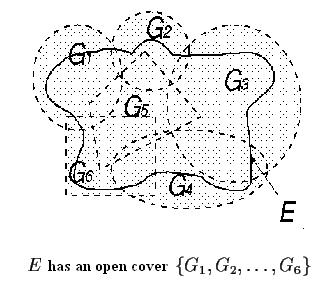
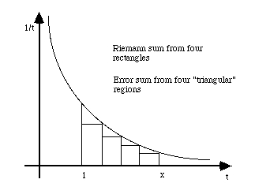

Visualizing group theory!?
If that's your first reaction, you're not alone. Sad to say, most group theory classrooms involve little or no visualization, and what is involved is usually neither dynamic nor interactive. Group Explorer is here to change that.
Before
Most branches of mathematics involve some sort of pictures; calculus has continuous curves, statistics has probability density functions, topology has surfaces, set theory has Venn diagrams.
 |
 |
 |
 |
Group theory tends to have very few pictures, and when it does (e.g. wallpaper groups or polyhedra) they serve only to exemplify a few select groups, and indirectly. Thus it is possible for a student to have a year or more of abstract algebra without ever picturing the subject in his or her head! This is a loss for any group theory student, and is a particular roadblock to visual learners.
After
Group Explorer provides advanced, interactive visualization techniques for group theory. It is particularly designed to be an aid for building intuition and understanding for students as they learn, but those seasoned in algebra may find themselves seeing the subject in a new light as well. I will briefly explain what Group Explorer can do.
- Multiplication tables (or Cayley tables) are a common introduction point for new students into binary operations and groups. Group Explorer allows exploration with these not before possible--not just viewing them, but highlighting them, comparing them, drawing homomorphisms between them, taking quotients of them, and more. See an example multiplication table or read more about multiplication tables.
- Cayley diagrams, a little used but highly potent group visualization tool, are the flagship intuition-building device used in Group Explorer. Better than any other technique, Cayley diagrams truly expose the structure of a group and the relationships between its elements and generators. These, too, can be used like multiplication tables: highlighting, homomorphisms, etc. See an example Cayley diagram or read more about Cayley diagrams.
- Other visualization techniques (symmetry objects--very common, and cycle graphs--very rare) are also integrated throughout Group Explorer. See an example object of symmetry or see an example cycle graph.
- Group Explorer's elaborate help and ideas allow the student to be guided by the software on their explorations and investigations in group theory. Group Explorer's group library is the perfect place to start for building conjectures or finding counterexamples. See an example group from the library.
Quick help links:
Contents | Getting Started | Tutorials | User Manual | Miscellaneous Reference
GE terminology | Help on help